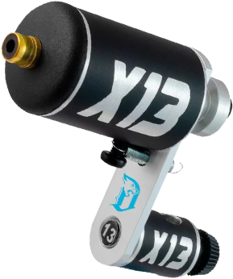

ESTILOS
- Anime
- Black Work
- Preto e Cinza
- Realismo
LOCAL
Povoado Campo de Nossa Senhora - Santa Luzia do Itanhy
AGENDE
Acesse a galeria e fique de olho nos trabalhos
Veja os desenhos disponiveis
Alguma coisa diferente em mente? especifique no campo desejo!
Whatsapp no rodapé do site
VALORES
Preço minimo por tatuagem - R$ 65,00.
valores que cabem no seu bolso
ANIME
As animações japonesas, conhecidas como animes, fazem parte da rotina e da paixão de muitos brasileiros. Nada melhor para expressar essa paixão que uma tatuagem de anime, concorda?
REALISMO
A tatuagem realismo nada mais é do que a arte de transpor fielmente a cena de uma fotografia para a pele.
O foco desse estilo é tentar reproduzir uma cópia idêntica a da imagem escolhida pelo cliente.
Geralmente é usado uma base fotográfica para fazer essa tattoo, ao invés de criar todo um desenho a mão.
BLACK WORK
Como o nome já diz, a tatuagem Blackwork é marcada predominantemente pela tinta preta.
o Blackwork pode ter contornos detalhados ou muitas vezes não uma definição de traços.
Os desenhos podem variar do mais simples e pouco sofisticados, como 2 linhas ou um desenho super trabalhado, que usa técnicas de sombreamento, realismo e até faz uso do espaço negativo do corpo.
PRETO E CINZA
O estilo é uma variação da tatuagem realista que usa a escala de tons de preto e cinza para compor a arte. As tatuagens desse estilo parecem fotos em preto e branco impressas sobre a pele.